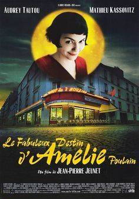
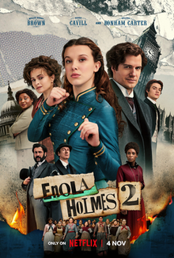
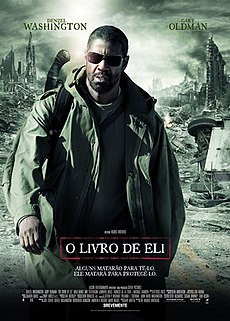
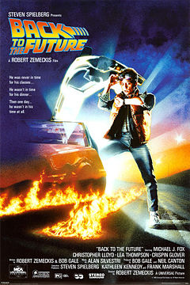
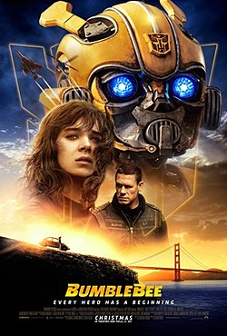
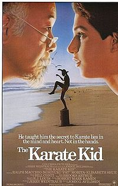
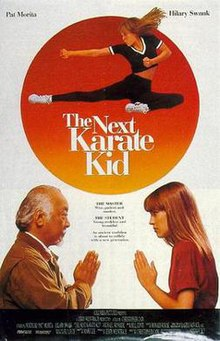
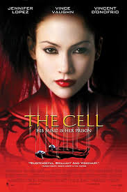

Acompanhe abaixo a lista de filmes favoritos
-
INTERESTELAR
2014 ‧ Ficção científica/Aventura ‧ 2h 49m

-
O FABULOSO DESTINO DE AMÉLIE POULAIN
2001 ‧ Comédia/Romance ‧ 2h 2m

-
ENOLA HOLMES
2020 ‧ Mistério/Crime ‧ 2h 3m
-
ENOLA HOLMES 2
2022 ‧ Mistério/Crime ‧ 2h 10m

-
DONZELA
2024 ‧ Ação/Aventura ‧ 1h 50m

-
O LIVRO DE ELI
2010 ‧ Ação/Thriller ‧ 1h 58m

-
DE VOLTA PARA O FUTURO
1985 ‧ Ficção científica/Comédia ‧ 1h 56m

-
BUMBLEBEE
2018 ‧ Ação/Ficção científica ‧ 1h 54m

-
KARATÊ KID - A HORA DA VERDADE
1984 ‧ Ação/Esporte ‧ 2h 6m

-
KARATE KID 4 - A NOVA AVENTURA
1994 ‧ Ação/Esporte ‧ 1h 47m

-
FILME BÔNUS: A CELA
2000 ‧ Thriller/Ficção científica ‧ 1h 49m
